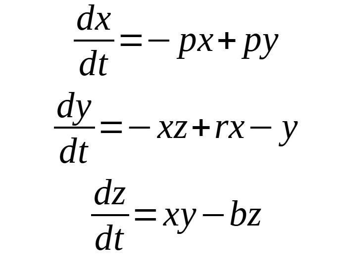
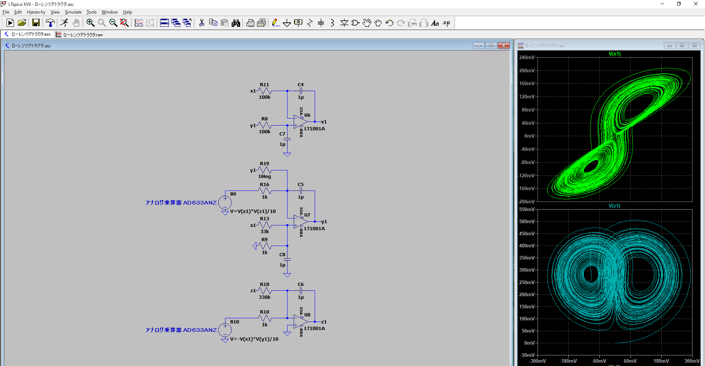

アナログ回路で解くローレンツアトラクタ
2021/9/20

今回はアナログ回路で微分方程式を解いて、ローレンツアトラクタを出力する回路を作ってみました
目次
- ローレンツアトラクタ（ローレンツ方程式）とは？
- カオスとは？
- 回路設計・製作
- 実際の動作
- まとめ
ローレンツアトラクタ（ローレンツ方程式）とは？
ローレンツ方程式とはこのような式で表される微分方程式で、主にp = 10、r = 28、b = 8/3 の場合のものが有名です
実際にこれを解いてx、y、z座標で表示するとこんな感じになります
カオスとは？
カオスとは、最初の状態（初期値）の微妙な違いによって、そのあとの現象が大きく変わる現象をさします。バタフライ効果という名前でも有名です
試しに先ほどのローレンツアトラクタでxの初期値を0.000001だけずらした軌道を同時に表示してみます
このように最初は違いがわかりませんが、しばらくするとズレていき全く違う軌道になりました
今回はこのローレンツアトラクタをアナログ回路で解く回路を作りました
回路設計・製作
回路構成はx、y、zそれぞれの積分回路３つと乗算回路２つ。
また元のローレンツ方程式ではx、y、zの値が±20～±50になっているので、x、y、zをそれぞれ100x、100y、100zで置き換えて値の中身を1/100にした方程式をもとに、±200 mV～±500 mVで動くように回路を設計しました
実際に作成した回路はこちら

実際の動作
4回路入りオペアンプの残り一つは単電源から両電源を作るように、また初めは電圧が回転の中心に収束してしまったので抵抗を追加して修正
肝心の電圧波形は
x

y

z

といった具合になりました
まとめ
XY mode使えるオシロスコープを持っておらず、簡易オシロでの動作確認ですがそれっぽい波形を確認することができました